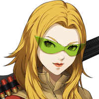

グラデンス
アサヒちゃん、ノゾミちゃん。 ２人の世界について少し教えてくれんかの？
グラデンス
いやなに、異界の方々と話をする機会は そうそうないからの。
セリア
ただ、２人と話したいだけじゃ ないんですか？
カル
俺もそんなつもりで 言ったんじゃないんだけど


ノゾミ
フフッ、面白い人たちね。
ノゾミ
いいわ。 ちょっと長くなるけど聞いてくれる？
ノゾミ
私たちの世界は、創造主である唯一神を 中心に二派に分かれていたの。
ノゾミ
神の忠実な下僕“メルカバー”と 反逆の悪魔王“ルシファー”。
ノゾミ
この二大勢力の戦いに人間は翻弄され 多くの犠牲を強いられてきたわ。
アサヒ
でも、そんな時に救世主フリンが 現れたの！
アサヒ
フリンは天使や悪魔の勢力を次々に倒して 多くの人を助けてくれたんだ♪
ノゾミ
クリシュナという多神連合の神により さらわれてしまった。
グラデンス
多神連合……唯一神を軸にした勢力とは また別の勢力ということか？
ノゾミ
ええ、多神連合の神々はかつて唯一神の 勢力により貶められた存在。
ノゾミ
彼らは唯一神が創り出した今の世界を 滅ぼし、新しい世界を創るつもりなの。
セリア
でも、そうなると今の世界に住む人たちは どうなっちゃうの？
ノゾミ
多神連合の神々は人間を新しい世界へ 導くため、魂の姿に戻すつもりよ。
アサヒ
だから、あたしたち“人外ハンター商会”は 多神連合と戦うことを選択したの！
ノゾミ
その力を脅威に感じた一神教の二勢力も 一時的に停戦し、
グラデンス
“今の世界に生きる存在”対 “新しい世界を創ろうとする存在”
カル
俺たちが四堕神っていう明確な敵と 戦うのと違って、複雑な状況なんだな。
アサヒ
フフッ、でもそんな中でもみんな 必死にがんばってるよ！
アサヒ
辛いことも多いけど、 楽しいことだってたくさんあるんだから♪
グラデンス
フォッフォッフォッ、アサヒちゃんは 良い子じゃの。
アサヒ
いつもナナシとかノゾミさんに 迷惑をかけてばっかりで……。
グラデンス
カル、セリア、 Shou-chanよ。
グラデンス
この２人を無事に元の世界に帰すぞ。 よいの。
グラデンス
フォッフォッフォッ、感謝などよいわ。 それより……。
カル
爺さん、それ以上は言うな。 俺たちの世界の印象が悪くなる。